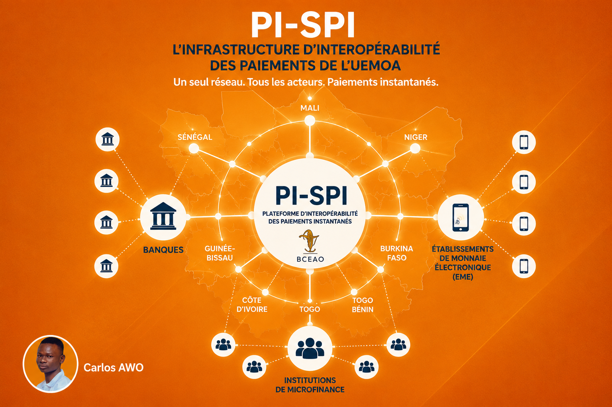

C'est quoi PI ? (1/30)

PI, c'est la Plateforme d'Interopérabilité de la BCEAO — l'infrastructure régionale qui connecte tous les acteurs financiers de l'UEMOA sur un même réseau de paiement.
Elle inclut PI-SPI, le système qui exécute les paiements instantanés entre comptes, peu importe qui les détient : banque, établissement de monnaie électronique (EME), ou institution de microfinance.
Concrètement, PI joue le rôle d'intermédiaire technique entre tous les participants. Un établissement ne se connecte qu'une seule fois à PI — pas à chacun de ses partenaires potentiels un par un — et il peut ensuite échanger avec l'ensemble du réseau : toutes les banques, tous les mobile money, toutes les institutions de microfinance connectées.
C'est une infrastructure gérée et supervisée directement par la BCEAO, ce qui en fait un système central et unique à l'échelle des huit pays de l'Union — pas une solution privée propre à un opérateur ou à un groupe d'opérateurs.
Trois catégories de participants s'y connectent : les banques, les EME, et les institutions de microfinance. Chacune peut se connecter directement, ou de façon indirecte via un participant sponsor — c'est le cas des établissements de paiement, comme Ifutur, le hub de paiement sur lequel je travaille.
Quel avantage pour le client ?
Le paiement est instantané, quel que soit le compte destinataire. Un virement qui prenait des heures ou des jours devient une opération de quelques secondes, disponible 24h/24 et 7j/7 — week-ends et jours fériés compris.
Envoyer de l'argent à quelqu'un devient aussi simple qu'un numéro de téléphone. Peu importe que le destinataire ait un compte bancaire, un compte mobile money ou un compte de microfinance : plus besoin de connaître son IBAN ou son numéro de compte, ni de se soucier de savoir chez quel opérateur il est.
Ça élimine aussi une frustration très concrète : avant, si toi tu étais chez un opérateur et ton destinataire chez un autre, soit l'opération était impossible, soit elle passait par des détours (cash-out puis cash-in, par exemple), avec des frais et des délais à chaque étape. Avec PI-SPI, cette barrière entre opérateurs disparaît pour le client final.
Concrètement : le client n'est plus obligé de rester chez un fournisseur parce que « c'est là où sont ses proches ou ses clients ». Il peut choisir son compte selon ses propres critères — frais, service, proximité — sans perdre en capacité à payer ou à recevoir de l'argent.
Glossaire
- Opérateur
- Établissement teneur de compte connecté à PI-SPI — banque, établissement de monnaie électronique (EME), ou institution de microfinance.
- Paiement instantané
- Transfert électronique de fonds où le montant est disponible pour le bénéficiaire en moins de 10 secondes, 24h/24 et 7j/7.
- Participant
- Institution connectée à la plateforme interopérable (banque, EME, microfinance, établissement de paiement).
- Participant sponsor
- Participant direct, disposant d'un compte de règlement dans STAR-UEMOA, qui prend en charge le règlement des soldes d'un participant indirect qui n'en a pas.
- Cash-in
- Dépôt d'espèces sur un compte (souvent un compte mobile money) via un point de service physique.
- Cash-out
- Retrait d'espèces à partir d'un compte via un point de service physique.
Sources
- Foire aux questions PI-SPI (BCEAO) — pispi.bceao.int/foire-aux-questions
- Présentation du Répertoire des Alias de Comptes (PI-RAC), BCEAO — document projet
- Page « À propos » PI-SPI (BCEAO) — pispi.bceao.int/propos